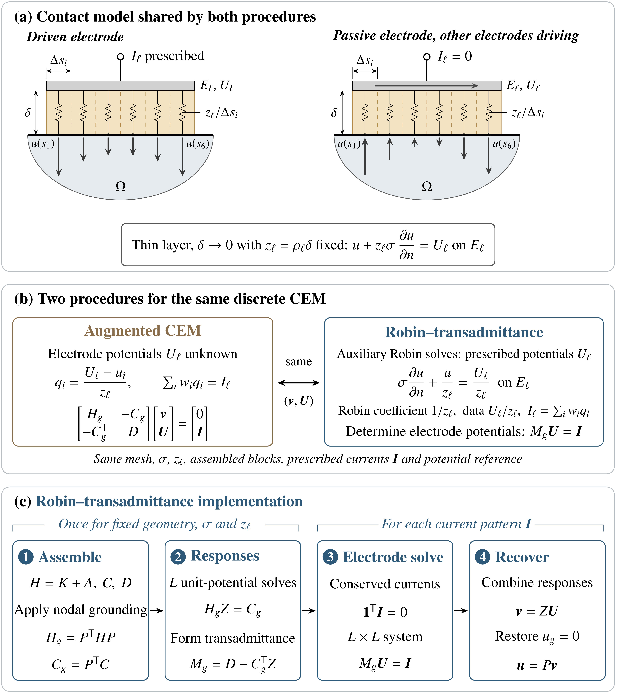
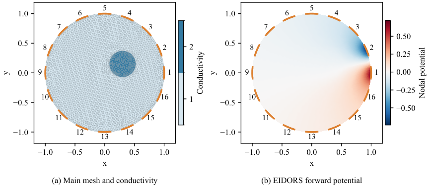

Formalizes in Lean 4 with Mathlib the discrete energy argument, the equivalence theorem between the augmented and Robin-transadmittance CEM, and the potential-reference results.
Abstract
Objective. Medical electrical impedance tomography systems prescribe electrode currents. Accurate voltages, even on passive electrodes, require the complete electrode model (CEM), the most accurate model known for skin electrodes. Its current constraints specify total electrode currents, whereas standard finite element boundary interfaces impose local conditions. We describe how to implement the CEM through Robin boundary conditions, which are available in standard FEM packages. Approach. Prescribed electrode potentials give Robin problems whose unit-potential responses define an electrode transadmittance matrix. We prove equivalence to the conventional augmented CEM and formalise the discrete energy, equivalence and reference arguments in Lean 4. Numerical comparisons use two-dimensional P1 finite elements in DOLFINx, FreeFEM, GetFEM, MFEM and NGSolve, with the same nodal reference potential as EIDORS. Main results. For identical assembled blocks, the two procedures have the same solution set whenever the Robin matrix is invertible. Across the five packages in dimensionless test cases, maximum absolute electrode-potential differences from EIDORS were below $5\times10^{-13}$ (2692 nodes), and errors against an exact rational-arithmetic reference were below $1.1\times10^{-13}$ (2535 nodes). Significance. Standard Robin solves and consistent electrode-current integration provide a portable route to the current-driven CEM, with current constraints enforced through a small electrode system.
Problem
The complete electrode model (CEM) for electrical impedance tomography imposes total electrode-current constraints. Standard finite element packages only offer local boundary conditions, so the CEM is hard to implement with general-purpose FEM software.
Approach
Electrode potentials are prescribed, which turns the problem into standard Robin problems. Their unit-potential responses define an electrode transadmittance matrix, and a small system with that matrix enforces the prescribed currents. Equivalence to the conventional augmented CEM is proved and formalised in Lean 4.24.0 with Mathlib; this covers the discrete energy argument, the equivalence theorem, grounding/reference reduction and the zero-mean/pseudoinverse construction. The method is implemented with P1 elements in DOLFINx, FreeFEM, GetFEM, MFEM and NGSolve and compared against EIDORS and an exact rational-arithmetic reference.

Figure 1: Shared contact model and equivalent CEM solution procedures. (a) An equipotential electrode is coupled to local surface potentials through a resistive layer of thickness \delta and resistivity \rho_{\ell} . The limit \delta\to 0 with z_{\ell}=\rho_{\ell}\delta fixed gives the distributed condition ( 2 ). Strips of width \Delta s_{i} illustrate resistances z_{\ell}/\Delta s_{i} per unit o
Results
For identical assembled blocks and an invertible Robin matrix, the two procedures have the same solution set, independent of the potential reference. Maximum electrode-potential differences from EIDORS were below 5e-13 (2692 nodes). Errors against the exact reference were below 1.1e-13 (2535 nodes).

Figure 2: 2692-node cross-platform case. (a) Common mesh and elementwise conductivity. (b) Directly computed EIDORS nodal potentials for the adjacent stimulation \bm{e}_{1}-\bm{e}_{2} , displayed using P1 interpolation. Orange segments mark the electrode chords.
Platform
max abs U diff
backward error
DOLFINx
3.531e-14
1.301e-16
FreeFEM
1.910e-14
7.402e-17
GetFEM
2.842e-14
9.162e-17
MFEM
4.641e-13
3.508e-16
NGSolve
1.732e-14
1.016e-16
Platform-native Robin–transadmittance vs EIDORS augmented CEM, 2692-node case: max abs electrode-potential difference